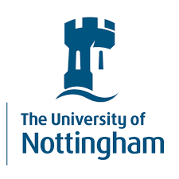
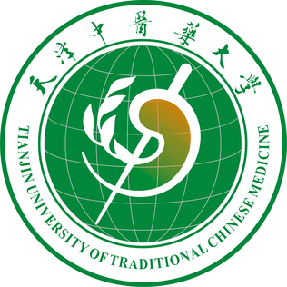

Education
-

PhD in AI-based Anti-cancer Drug Discovery, University of Nottingham Ningbo China (2022–Now)
-
BSc Hons International Pharmacy, University of Nottingham (2019–2021)

Bachelor of Clinical Pharmacy, Tianjin University of Traditional Chinese Medicine (2016–2018)
Experience
-
Teaching Assistant, University of Nottingham Ningbo China (2023–2024)
- Assisted in Chemical and Environmental Engineering week
- Assisted in teaching undergraduate courses in CADD
-
Research Assistant, University of Nottingham Ningbo China (2022–2024)
- Worked on Machine Learning Based LSD1 Inhibitors Discovery
-
Intern, Xijing Hospital (2021–2022)
- Worked as pharmacist intern in the Department of Clinical Pharmacy
Skills
- Python, Pytorch, Pandas, Numpy, scikit‑learn
- RDKit, DeepChem, Autodock Vina, ChemDraw, Gromacs, Pymol, BIOVIA Discovery Studio
- LaTeX, Overleaf
- Piano, Ukulele